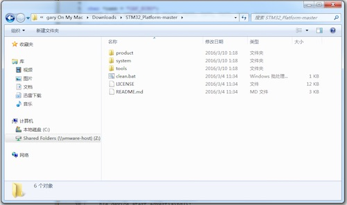
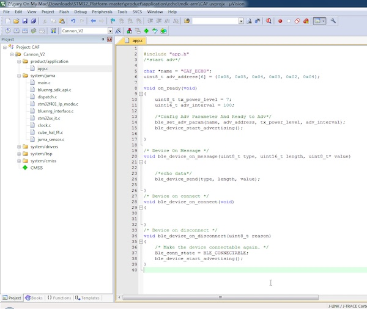
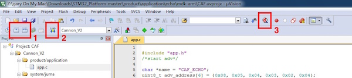

Cannon的编译下载
打开一个工程¶
在Cannon的第一次篇幅中，我们已经下载了github上的软件包。如果您还没有下载，在此附上下载链接：
github上托管的软件仓库地址：
https://github.com/JUMA-IO/STM32_Platform
以下地址是经过发布的软件包：
https://github.com/JUMA-IO/STM32_Platform/releases
下载后，目录结构如下图所示：

product\application下是提供的Cannon开发例程，我们打开其中的一个工程，双击运行.uvoptx即可，譬如：
x:\STM32_Platform-master\product\application\echo\mdk-arm\CAF.uvoptx
打开后，Keil的工程界面如下图所示：

进行工程配置¶
默认情况下，工程配置不需要修改。不过，在此我们学习一下如何正确的修改工程配置。
1. 选择MCU型号¶

2. 进行宏定义¶
注意头文件路径包含的信息

3. 调试器选择：J-Link或者STLink¶


这里以J-Link为例，将Gnd、SWDIO、SWCLK、VCC分别到Cannon上对应的接口：

如果对硬件连接不清楚，请参阅左侧的
Cannon的开发环境篇幅。
4. 检查J-Link和STLink的连接¶
按如下图配置，出现图右侧的设备信息，表示设备正常连接，否则需检查J-Link或者STLink连线：

5. 选择MCU Flash大小¶

编译、下载或调试¶
经过上述步骤，如果J-Link或者STLink配置正确，我们便可以对工程进行编译、下载和调试。

上图的三个序号分别表示：
1 - 编译或者全部编译；
2 - 下载代码至Cannon；
3 - 在线调试代码；
观察日志输出，如果按部就班的操作本系列说明，应该不会出现错误信息。
至此，我们完成了Cannon工程的开发环境搭建工作，之后，我们将介绍Cannon的应用例程。